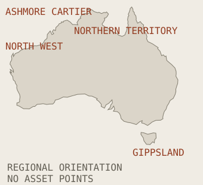

Australian offshore records
Edition 01: ten official records, reviewed 18 September 2026, expanding each quarter. Each entry separates scope, assessment outcome and reported commencement, with links to the original source.
An independent, source-cited register of Australian offshore decommissioning activity, compiled from public regulator publications.
For operators, analysts, researchers and media.
Each entry reports the regulator’s published status, with its source link and checked date. Statuses are reported, never interpreted.
Corrections, 18 September 2026: BMG Closure Project Phase 2 status updated to “Under assessment (with NOPSEMA)”; Echo Yodel Subsea Decommissioning rechecked and retained as “Under assessment (with titleholder)”; Petrel-3 and Petrel-4 notified stop added (7 September 2026).
Reading this reference
These are industry records, not Endura project credits. The selection is not a complete national inventory or a live progress tracker. Follow each original source for its current status.
Return to the technical library →Explore by region.

Regional orientation only. Controls use NOPSEMA location categories; no asset positions are plotted.
Selected records, not a national census. Checked dates describe source review, not site inspection.
Method & corrections ↓Edition briefing →EP 8306Gippsland Basin Decommissioning - Campaign #1 Execution Environment Plan
Gippsland Basin Decommissioning - Campaign #1 Execution Environment Plan
The accepted plan covers a heavy-lift removal campaign and transfer of removed structures for onward transport. Its published schedule anticipates activity from Q3 2026 to Q1 2028.
- Submitted
- Environment plan accepted
- Notified commencement
- Pending titleholder notification
- Completion
- Not established by this record
- Source location
- Commonwealth waters, 21 to 77 km off eastern Victoria.
- Basin named in source
- Gippsland Basin
Start notification remains pending. The scope describes selected structures, not complete removal of every facility component; the forecast is not evidence of execution.
Read original NOPSEMA record ↗ (opens in a new tab)Source checked: 18 September 2026 · Link to this entry
EP 8655Montara 1,2,3 Wellhead Removal
Montara 1,2,3 Wellhead Removal
The plan provides several cutting options to recover the Montara-1, -2 and -3 wellheads. It allows an approximately 14-day campaign including vessel mobilisation and demobilisation.
- Submitted
- Environment plan accepted
- Notified commencement
- Pending titleholder notification
- Completion
- Not established by this record
- Source location
- Montara Field, production licence AC/L7; approximately 80 m water depth.
- Basin named in source
- Not stated in this record
The wells' earlier plugging and abandonment does not establish wellhead removal. Removal timing is explicitly unknown and vessel-dependent; no start is notified.
Read original NOPSEMA record ↗ (opens in a new tab)Source checked: 18 September 2026 · Link to this entry
EP 8584Julimar-Brunello Plug and Abandonment
Julimar-Brunello Plug and Abandonment
The accepted plan covers MODU-based work on three exploration wells and a contingent intervention at a fourth well. The register records a titleholder-notified start on 8 May 2026.
- Submitted
- Environment plan accepted
- Titleholder-notified commencement
- Notified commencement
- 8 May 2026
- Completion
- Not established by this record
- Source location
- WA-49-L, approximately 185 km WNW of Karratha; 135 to 171 m water depth.
- Basin named in source
- Barrow Sub-Basin
The plan expressly excludes final field decommissioning and title surrender. Some wellhead recovery may occur under a separate EP; completion is not established.
Read original NOPSEMA record ↗ (opens in a new tab)Source checked: 18 September 2026 · Link to this entry
RMS 8935Echo Yodel Subsea Decommissioning
Echo Yodel Subsea Decommissioning
The revision proposes removal of the pipeline between the Goodwyn Alpha isolation structure and the Yodel wells. The published commencement window is November 2026 to January 2027, subject to approvals and delivery conditions.
- Submitted
- Notified commencement
- Unknown: not reported on this assessment page
- Completion
- Not established by this record
- Source location
- North West Shelf Province, approximately 140 km northwest of Dampier; 130 to 135 m water depth.
- Basin named in source
- Not stated in this record
This revision is under assessment. Historical well and umbilical work described on the page must not be presented as completion of this proposed pipeline scope.
Earlier accepted plan: EP 5222 ↗ (opens in a new tab). This is separate from the revision under assessment.
Read original NOPSEMA record ↗ (opens in a new tab)Source checked: 18 September 2026 · Link to this entry
RMS 8810BMG Closure Project Phase 2
BMG Closure Project Phase 2
The revision proposes recovery of remaining subsea infrastructure after the earlier well-abandonment phase. Approximately 75 offshore activity days are anticipated, with proposed Phase 2 completion by 31 December 2030.
- Submitted
- Notified commencement
- Unknown: not reported on this assessment page
- Completion
- Not established by this record
- Source location
- VIC/RL13, about 50 km offshore south of Cape Conran; 135 to 270 m water depth.
- Basin named in source
- Unknown: page identifies the Gippsland region, without separately naming a basin
The revision is under assessment. Phase 1 completion in May 2024 does not establish Phase 2 completion, and the 2030 date is a proposal.
Earlier accepted plan: EP 7074 ↗ (opens in a new tab). This is separate from the revision under assessment.
Read original NOPSEMA record ↗ (opens in a new tab)Source checked: 18 September 2026 · Link to this entry
EP 8208North West Shelf Phase 1 Plug and Abandonment and TPA03 Well Intervention
North West Shelf Phase 1 Plug and Abandonment and TPA03 Well Intervention
The accepted campaign combines permanent abandonment of five wells with an intervention at TPA-03. The register records a titleholder-notified start on 4 February 2026.
- Submitted
- Environment plan accepted
- Titleholder-notified commencement
- Notified commencement
- 4 February 2026
- Completion
- Not established by this record
- Source location
- Commonwealth waters; nearest well about 125 km north of Dampier, in 77 to 128 m water depth.
- Basin named in source
- Northern Carnarvon Basin
TPA-03 intervention supports potential future production and is not abandonment. The EP is not the final decommissioning or title-surrender plan; no stop is notified.
Read original NOPSEMA record ↗ (opens in a new tab)Source checked: 18 September 2026 · Link to this entry
EP 8520Jack-Up Rig Wellwork BTA
Jack-Up Rig Wellwork BTA
The accepted plan covers jack-up-rig wellwork at Barracouta, with up to nine wells and an estimated 120-day campaign. A titleholder-notified start is recorded for 18 August 2026.
- Submitted
- Environment plan accepted
- Titleholder-notified commencement
- Notified commencement
- 18 August 2026
- Completion
- Not established by this record
- Source location
- Barracouta platform, VIC/L02; existing 500 m petroleum safety zone.
- Basin named in source
- Gippsland Basin
The description's earlier Q4 2025 forecast is not the notified start. This is a wellwork scope, not evidence that the platform has been removed.
Read original NOPSEMA record ↗ (opens in a new tab)Source checked: 18 September 2026 · Link to this entry
EP 8007Petrel-3 and Petrel-4 Monitoring and Decommissioning
Petrel-3 and Petrel-4 Monitoring and Decommissioning
The accepted plan covers monitoring, preparation, permanent well abandonment and a post-decommissioning seabed survey. The activity page records a titleholder-notified start on 4 September 2026 and stop on 7 September 2026.
- Submitted
- Environment plan accepted
- Titleholder-notified commencement
- Titleholder-notified stop
- Notified commencement
- 4 September 2026
- Notified stop
- 7 September 2026
- Completion
- Not established by this record
- Source location
- Petrel-3 and Petrel-4 in NT/RL1; field water depth approximately 95 m.
- Basin named in source
- Bonaparte Basin
Equipment retention is a contingency if reasonable recovery attempts fail. The record does not establish which components have been recovered or whether abandonment is complete.
Read original NOPSEMA record ↗ (opens in a new tab)Source checked: 18 September 2026 · Link to this entry
EP 7977Reindeer Wellhead Platform and Gas Supply Pipeline Operations and Cessation of Production
Reindeer Wellhead Platform and Gas Supply Pipeline Operations and Cessation of Production
The accepted plan combines operations with production-cessation and preservation activities. Preserved infrastructure may remain while future reuse or decommissioning decisions are made.
- Submitted
- Environment plan accepted
- Notified commencement
- Unknown: start field not displayed
- Completion
- Not established by this record
- Source location
- Reindeer field, approximately 80 km northwest of Dampier.
- Basin named in source
- Not stated in this record
The register classifies the lifecycle as decommissioning, but this EP does not establish full removal. Its forecast cessation date is not evidence that production has ceased. The description contains inconsistent production-licence references, so none is asserted here.
Read original NOPSEMA record ↗ (opens in a new tab)Source checked: 18 September 2026 · Link to this entry
EP 7924Ningaloo Vision Cessation of Production and Floating Asset Removal
Ningaloo Vision Cessation of Production and Floating Asset Removal
The accepted plan covers floating-asset removal and management of retained infrastructure. A titleholder-notified start is recorded for 4 August 2025.
- Submitted
- Environment plan accepted
- Titleholder-notified commencement
- Notified commencement
- 4 August 2025
- Completion
- Not established by this record
- Source location
- North West: no more specific geographic position established by the cited HTML record.
- Basin named in source
- Not stated in this record
Well abandonment and most subsea-infrastructure removal require separate future EPs. Some mooring recovery is conditional; the notified start does not establish completion of these components.
Read original NOPSEMA record ↗ (opens in a new tab)Source checked: 18 September 2026 · Link to this entry
No records match these filters. Try a broader search or reset the filters.
Keep the claim inside the evidence.
Selection and scope
This edition contains ten selected NOPSEMA public activity or environment-plan assessment records relevant to decommissioning. It is not a complete Australian asset inventory. Records are grouped using the source’s location categories. A basin is named only where established by the cited record.
Dates and status
Submission, assessment outcome, notified commencement and completion are separate events. An accepted environment plan does not establish completed work. A revision under assessment remains distinct from an earlier accepted plan. Proposed dates are not actual dates. “Not established” identifies a limit of this review.
Map and age information
The outline supports regional orientation only. No asset coordinates or basin polygons are asserted. An age filter is omitted because a consistent installation-date basis has not been verified. Drilling date, first production and installation age are not interchangeable.
Sources and corrections
Source checks were made on 18 September 2026. Original regulatory pages remain authoritative and may change after this date. No regulator endorsement or Endura participation is implied. The index contains original short summaries and factual metadata, with links to the sources; source PDFs are not republished.
To request a correction, send the entry title, source link and the point requiring review to jed@enduradecom.com. A correction should retain the prior edition and identify the changed field, supporting source and check date.
Since the last edition
This is the baseline edition. There is no earlier edition against which to claim quarterly movement. Future editions can compare retained records on the same basis.
Download this edition · JSON